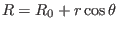
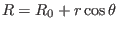

Next: Large aspect ratio expansion Up: Notes on tokamak equilibrium Previous: Safety factor profile
Consider
coordinates, which are related to the cylindrical
coordinates  by
and
, as
shown in Fig. 28.
by
and
, as
shown in Fig. 28.
Next, we transform the GS equation from  coordinates to
coordinates. Using the relations
and
, we have
coordinates to
coordinates. Using the relations
and
, we have
| (369) |
| (370) |
| (371) |
| (372) |
| (373) |
| (376) |
| (377) |

| (378) |
| (381) |